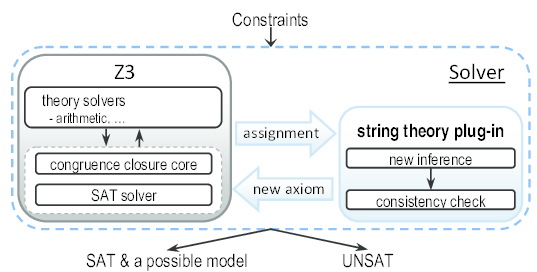
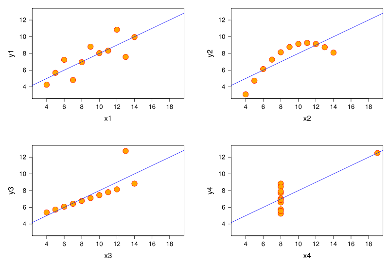
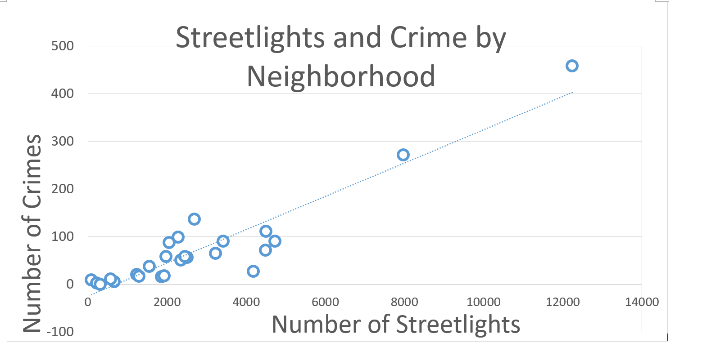

What makes some Boston neighborhoods safer than other? What can the city of Boston do to help reduce crime rates? Since there are many factors influencing crime, we chose to focus on those which can be most easily controlled, such as infrastructure and placement of safety resources.
Problem
We have chosen to address two specific issues in relation to analyzing crime and taking preventative measures; (1) Is the number of streetlight in a district correlated to the number of crimes in Boston?; (2) What is the optimal way to place night patrols in each district such that every street will be covered?
Motivation
While it is difficult to determine what exactly is the cause, we hope that by better understanding these crimes, we could potentially reduce the number of incidences in Boston. Our motivation to improve this issue stems from the following questions:
Research
What makes some Boston neighborhoods safer than others? What can the city of Boston do to help reduce crime rates? To answer these questions, we’ll be analyzing the influence of various factors, such as the presence of streetlights, which may explain the crime-rate differences in Boston neighborhoods.
Our project focuses on crime incidences throughout the city of Boston. Specifically, we analyze crime data
(such as the frequency and location of the crimes) to prove a whether or not a correlation exists in order to explain a possible cause.
And secondly, we aim to suggest preventive measures for the city in an optimal way.
Datasets
To solve this problem and perform the necessary analysis, we use and manipulate several datasets as described below.
Crime Incidents
Description: Crime incident reports are provided by Boston Police Department (BPD) to document the initial details surrounding an incident to which BPD officers respond. From Analyze Boston.
Boston Neighborhoods
Description: This dataset GeoJSON polygons, which are enclosed areas within certain geographical coordinates that represents the neighborhoods in Boston. Source: Boston OpenDataSoft.
Streetlight Locations
This is a legacy dataset containing lattitude and longitude data for over 74,000 City streetlights in Boston. Source: Analyze Boston
Transformations
The following datasets were acquired by manipulating the datasets retrieved from above.
crimeStats
Description: This script creates crime statistics; it reads data from
Crimes Incident Reports and finds the average location (latitude, longitude) for each street in each district where crimes existed.
sortedNeighborhoods
Description: Aggregates crimes and streetlights counts to the neighborhood level given the coordinate for a streetlight or crime, checking to see if it falls within neighborhood bounds.
Algorithms and analysis
Z3 Constraint Satisfaction Algorithm
The model returns the minimum number of patrols needed in each district such that every street will be covered.

Usability:
We used Z3 Solver to solve a constraint satisfaction problem; it determines a model for each district (neighborhood) given constraints. Multiple streets can
be covered by a night patrol if they're less than 1 block away (approx 800 ft. or 0.15 miles), as specified in the equations.
This is similar to the edge cover problem in which the streets are nodes, and edges exist between them if they are a certain distance away. The model will tell us whether all
nodes can be covered, as well as the minimum number that allows all nodes to be covered
Limitations:
If there are too many constraints in the dataset, it is possible for the solver to be unable to find a satisfying solution. Moreover, finding the optimal (minimal number) is not efficient in running time. It requires trying all possible values
until hitting the minimum. Although this can be sped up with binary search, it is still quite slow overall
Correlation Coefficient Analysis
We found the correlation between the number of streetlights and number of crimes in each Boston neighborhood by calculating the p-value.

Usability:
We aimed to uncover correlation between number of streetlights and number of crimes that occur in Boston neighborhoods. We hypothesized that outdoor lighting would reduce crime (i.e. there would be a negative correlation between number of streetlights and number of crimes in a given neighborhood)
Using the Data Mechanics Library (DML), we ran a correlation between the number of streetlights, and the number of crimes occurring in each neighborhood within the last year. This resulted in a correlation coefficient of +.9375.
Limitations:
We faced some difficulty trying to aggregate data to the neighborhood level. Some datasets indicated location with zip code and others with street address. Since we wanted to identify patterns on a smaller scale, we had to use the Analyze Boston Neighborhoods datasets, which provided GeoJSON polygons, to determine whether a crime of streetlight fell within the bounds of a neighborhood.
Results

We ran a correlation between the number of streetlights and the number of crimes reported in each Boston neighborhood. The results show a correlation coefficient of +0.9375.
Conclusion
Graph of the correlation
By (1) analyzing the relationship between street lights and crime incidences, and (2) determining potential optimal locations for night patrols, we have found from (1) that the relationship between streetlights and crimes has a p-value of +.9375. Several factors may account for these unexpected results. It is possible for neighborhoods with larger populations to likely have both more crimes and streetlights. Additionally, it’s possible that light does not in fact deter crime. We have also generated from (2) the optimal (minimal) patrol placement so that streets where crimes occur are covered within a certain number of feet.
Meaning
The relationship between streetlights and crimes has a correlation coefficient of +.9375. Our results suggest a positive correlation between number of streetlights and the number of crimes in a neighborhood.
Since we did consider factors such as size of neighborhood, we cannot reasonably conclude increasing outdoor light
has any effect on crime rates.
Visualization // UI Design
To better visualize our results, we’ve created a web application that takes in user input and later displays map results
Web App: Minimizing Patrol Placements in Boston Districts
This script will allow you to visualize our data and run our algorithm (getOpt.py) with our web app. The app takes in the input of number of feet and district from the user. And based on the inputs, our algorithm will determine exactly which streets will have a patrol, such that every street in the selected district within the specified feet is covered. The assignments are optimally placed such that the number of patrols is minimized.
API: Uses the Google Maps API to display results, with markers indicating where the patrols would be placed.